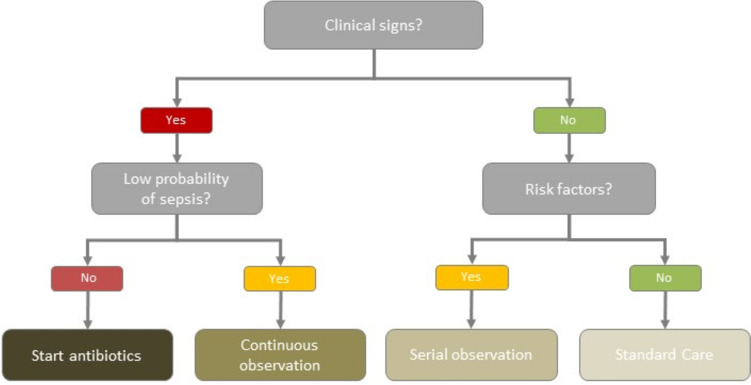
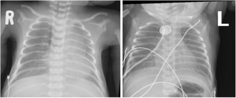
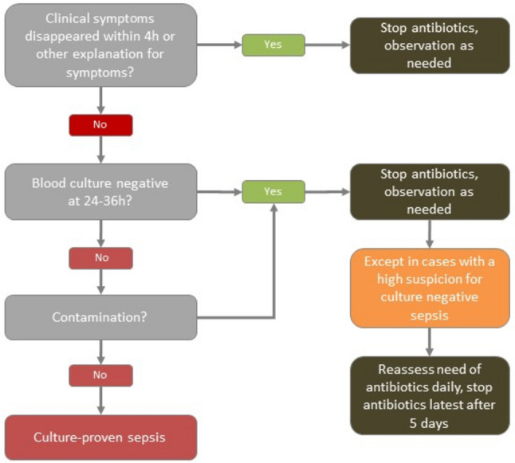

1937 — Nhiễm khuẩn huyết sơ sinh khởi phát sớm ở trẻ có mẹ viêm màng ối: dùng kháng sinh bao lâu, dừng dựa vào gì / Early-onset neonatal sepsis in the infant of a mother with chorioamnionitis: how long, and on what evidence to stop
Tags: pattern:viem pattern:nhiem-khuan-huyet pattern:dong-dac pattern:hat-kinh-mo vung:phoi vung:so-sinh protocol:X-quang-nguc protocol:cay-mau score:EOS-calculator
Mức chắc chắn (certainty): tổng hợp y văn (literature synthesis) — ghép hướng dẫn Thụy Sĩ 2024 (PMC11527939: thuật toán "không triệu chứng thì không kháng sinh", thời hạn 24–36 giờ, 5 ngày, 7–14 và 14–21 ngày), đoàn hệ 13 mạng lưới 2014–2018 (PMC9685486: 757.979 trẻ, 2,86% nhận kháng sinh, EOS 0,49/1.000), phân tích gộp toàn cầu (PMC8311109: 2.824/100.000 trẻ sinh sống, 17,6% tử vong), và đoàn hệ cực non tháng (PMC6531328: kháng sinh sớm kéo dài ở 5.730 trẻ 401–1.000 g). Số nào nguồn không nêu ghi "chưa rõ".
Câu chốt: với trẻ có mẹ viêm màng ối nhưng trẻ KHÔNG có dấu hiệu bệnh, câu trả lời hiện đại không phải "7 ngày kháng sinh" mà là theo dõi sát 48 giờ, cấy máu ≥ 1 mL trước khi dùng thuốc, và dừng ở 24–36 giờ nếu cấy âm + trẻ khỏe. Ba con số quyết định: cứ 1 ca EOS được xác định thì có 58 trẻ được dùng kháng sinh và 273 ngày kháng sinh tiêu tốn (PMC9685486); 90% trẻ EOS có triệu chứng trong 48 giờ đầu (PMC11527939) — nên "chờ xem" chỉ an toàn khi có khám lại liên tục, không phải "cho thuốc rồi quên".
1. Tổng quan bệnh học – cơ chế hình ảnh
1.1 Vì sao EOS xảy ra trong 48–72 giờ đầu và vì sao mẹ viêm màng ối là chìa khóa (TẠI SAO)
- Đường lây là tại sinh (vertical): vi khuẩn từ âm đạo – cổ tử cung đi lên qua màng ối hoặc nhiễm dịch ối khi vỡ ối, rồi vào phổi – máu – màng não của thai. Vì vậy EOS không phải bệnh "mắc phải" sau sinh mà là bệnh đã khởi phát trước/sát sinh, biểu hiện trong 48–72 giờ đầu.
- Hai tác nhân chi phối: Streptococcus nhóm B (GBS) và E. coli — GBS gây viêm phổi – nhiễm khuẩn huyết – viêm màng não; E. coli trội hơn ở trẻ non tháng và thường kháng ampicillin.
- Vì sao viêm màng ối làm tăng nguy cơ: viêm màng ối tạo ổ vi khuẩn nồng độ cao ngay sát thai, làm vỡ ối kéo dài và sinh non — ba yếu tố cộng gộp. Nguy cơ tương đối của EOS ở trẻ có mẹ viêm màng ối ≈ 5 lần (bài 1926), nhưng vì EOS nền chỉ 0,49/1.000 (PMC9685486) nên nguy cơ tuyệt đối vẫn thấp — đây là lý do "quan sát" trở thành lựa chọn hợp lý ở trẻ đủ tháng khỏe mạnh.
- Vì sao kháng sinh kéo dài có hại: kháng sinh đầu đời phá hệ vi khuẩn chí (microbiome) đang định hình, liên quan tới hen, béo phì, đái tháo đường type 1, bệnh viêm ruột về sau; đồng thời làm tăng chọn lọc đề kháng và tách mẹ – con. Ở 13 mạng lưới, mỗi ca EOS "đi kèm" 58 trẻ được điều trị và 273 ngày kháng sinh (PMC9685486).
1.2 Vì sao hình ảnh trông như vậy (vật lý từng phương thức)
- X-quang ngực sơ sinh: phổi sơ sinh còn dịch trong phế nang và mô kẽ ngay sau sinh. Dịch này hấp thụ tia X → mờ; khi dịch rút đi trong 24–72 giờ phổi trở nên sáng. Vì vậy:
- RDS (bệnh màng trong): thiếu surfactant → phế nang xẹp thể tích phổi thấp (< 7 cung sườn), mờ hạt mịn đối xứng (ground-glass), air bronchogram nổi bật vì phế quản chứa khí nằm trong nhu mô mờ.
- Viêm phổi do GBS/EOS: dịch viêm giàu protein + bất hoạt surfactant cũng gây xẹp và mờ hạt mịn → bắt chước RDS hoàn hảo, khác biệt duy nhất trên phim là bối cảnh (đủ tháng/già tháng, mẹ sốt, ối hôi) chứ không phải hình thái.
- TTN (thở nhanh thoáng qua): dịch còn trong khe liên thùy và màng phổi → đường mạch nổi, dịch rãnh, thể tích phổi bình thường hoặc hơi tăng, tự hết trong 48–72 giờ.
- MAS (hít phân su): đám mờ thô, không đều, ứ khí, dễ tràn khí màng phổi ở trẻ già tháng.
- Vì sao X-quang có thể bình thường trong EOS: tổn thương phổi là vi mô ở giai đoạn đầu; phim chụp sớm chỉ thấy thay đổi mờ nhẹ hoặc không thấy gì. Vì vậy X-quang bình thường KHÔNG loại trừ nhiễm khuẩn huyết — đây là cạm bẫy hay gặp.
- Vì sao CRP đến muộn: IL-6 tăng 0–6 giờ (đỉnh ~2 giờ), CRP do gan tổng hợp nên tăng 6–12 giờ, đỉnh 24–48 giờ, về bình thường 48–72 giờ. Một CRP lúc 6 giờ có độ nhạy thấp; giá trị nằm ở hai lần âm tính liên tiếp 24–36 giờ để dừng kháng sinh (PMC11527939).
- Vì sao procalcitonin (PCT) khó dùng: PCT tăng sinh lý sau sinh, đỉnh 24–48 giờ (trẻ non tháng đỉnh cao hơn và kéo dài hơn), nên một giá trị đơn lẻ không phân biệt được nhiễm với "sinh lý"; chỉ chuỗi PCT 48–72 giờ mới có ý nghĩa.
1.3 Ngưỡng định lượng nằm lòng
| Đại lượng | Ngưỡng / con số | Ý nghĩa | Nguồn |
|---|---|---|---|
| EOS ở trẻ ≥ 34 tuần (13 mạng lưới) | 0,49/1.000 trẻ sinh sống (khoảng 0,18–1,45) | Nguy cơ nền rất thấp | PMC9685486 |
| Tử vong do EOS | 3,20% (12/375) | Không phải bệnh lành tính | PMC9685486 |
| Tỉ lệ trẻ được dùng kháng sinh tuần đầu | 2,86% (21.703/757.979), 1,18–12,45% giữa các mạng | Dùng thuốc nhiều hơn bệnh 58 lần | PMC9685486 |
| Số trẻ điều trị cho mỗi ca EOS | 58 trẻ; 273 ngày kháng sinh/ca | Thước đo lạm dụng | PMC9685486 |
| Thời gian kháng sinh khi không có EOS | trung vị 4 ngày (3–6) | Thực hành, không phải khuyến cáo | PMC9685486 |
| Thời gian kháng sinh khi có EOS | trung vị 9 ngày (7–14) | Tương ứng 7–14 ngày Gram dương | PMC9685486 |
| Triệu chứng khởi phát | > 90% trong 48 giờ đầu | Cơ sở của "theo dõi 48 giờ" | PMC11527939 |
| EOS toàn cầu (mọi cân nặng) | 2.824/100.000 trẻ sinh sống; 17,6% tử vong | Gánh nặng ở nước thu nhập thấp | PMC8311109 |
| EOS thập niên 2009–2018 (LMIC) | 3.930/100.000 | Xu hướng tăng | PMC8311109 |
| Cấy máu tối thiểu | ≥ 1 mL (tốt nhất 1–2 mL) trước kháng sinh | Dưới 1 mL → âm tính giả | PMC11527939 |
| Tỉ lệ I/T (immature/total neutrophil) | ≥ 0,2 là bất thường | Bạch cầu non chưa trưởng thành | PMC9685486 |
| CRP dùng để dừng thuốc | 2 lần âm tính liên tiếp trong 24–36 giờ | Giá trị nằm ở chuỗi, không ở một lần | PMC11527939 |
| Viêm màng ối (Triple I) | sốt ≥ 39,0 °C một lần hoặc 38,0–38,9 °C đo lại sau 30 phút | Ngưỡng "documented fever" | bài 1926 |
| Thời gian kháng sinh Gram dương / Gram âm | 7–14 ngày / 14–21 ngày | Tính theo vi khuẩn và ổ nhiễm | PMC11527939 |
| "Nhiễm khuẩn huyết cấy âm" | Dừng muộn nhất 5 ngày, không chuyển uống | Tránh kéo dài mơ hồ | PMC11527939 |
2. Mẫu hình + chẩn đoán phân biệt theo vị trí (gamut)
Mẫu hình chính: trẻ sơ sinh thở nhanh/rên/rút lõm + yếu tố nguy cơ mẹ (sốt, ối vỡ > 18 giờ, GBS dương, sinh non) → nghĩ EOS. Gamut dưới đây xếp theo hình thái phổi trên X-quang, vì đó là thứ bác sĩ CĐHA phải trả lời.
- Mờ hạt mịn đối xứng + thể tích thấp: RDS (non tháng), viêm phổi do GBS/EOS (đủ tháng, mẹ viêm màng ối), viêm phổi bẩm sinh khác (Listeria, E. coli).
- Thể tích bình thường/tăng + dịch rãnh + đường mạch nổi: TTN (thường sau mổ lấy thai chủ động, hết trong 48–72 giờ).
- Đám mờ thô không đều + ứ khí ± tràn khí: MAS (già tháng, ối phân su).
- Mờ một bên + mất thể tích (khe/trung thất lệch): xẹp phổi do nút nhầy, ống nội khí quản sai vị trí, dị vật hiếm.
- Phổi "sạch" nhưng trẻ sốc/toan: nhiễm khuẩn huyết không có ổ phổi, bệnh chuyển hóa, tim bẩm sinh ống động mạch phụ thuộc.
- Tim to + tuần hoàn phổi tăng: tim bẩm sinh; PPHN khi áp lực phổi cao (bài 607).
- Bụng: viêm ruột hoại tử (NEC) khi có khí trong thành ruột (pneumatosis), khí tĩnh mạch cửa — không được quy hết cho "sepsis".
- Ngoài phổi: tràn khí màng phổi, tràn dịch màng phổi, đặt catheter rốn sai vị trí — nguyên nhân "giả sepsis" hoặc biến chứng của thở máy.
3. Bảng so sánh phân biệt (ma trận đối chiếu)
| Thực thể (entity) | Hình ảnh điển hình | Chốt vào (rule-in) | Chốt loại (rule-out) | Gợi ý xác nhận |
|---|---|---|---|---|
| EOS / viêm phổi do GBS | Mờ hạt mịn, thể tích thấp, air bronchogram; có thể khu trú hoặc bình thường | Mẹ sốt/viêm màng ối + trẻ bệnh trong 48 giờ + cấy máu dương hoặc mờ hạt mịn ở trẻ đủ tháng | Phổi sạch + trẻ khỏe + cấy âm 24–36 giờ + CRP âm → không viêm phổi | Cấy máu ≥ 1 mL; CRP 0 và 24–36 giờ; X-quang lặp khi xấu đi |
| RDS | Mờ hạt mịn đối xứng, thể tích < 7 cung sườn, air bronchogram | Non tháng + suy hô hấp ngay sau sinh + đáp ứng surfactant | Đủ tháng, mẹ sốt, CRP tăng → không phải RDS đơn thuần | Tuổi thai + đáp ứng surfactant; cấy máu để loại EOS |
| TTN | Dịch khe liên thùy, đường mạch nổi, thể tích bình thường/tăng | Sinh mổ chủ động + thở nhanh + hết trong 48–72 giờ | Xấu đi sau 72 giờ, sốt, CRP tăng → không phải TTN | Theo dõi 48–72 giờ; X-quang lặp nếu không cải thiện |
| MAS | Đám mờ thô, không đều, ứ khí, tràn khí | Già tháng + ối phân su + bẩn da/móng | Phổi hạt mịn đối xứng, non tháng → không phải MAS | Lâm sàng + X-quang; hút khí quản |
| PPHN | Phổi sạch hoặc giảm tưới máu; tim to | Tăng áp phổi, shunt phải–trái, chênh SpO₂ trước–sau ống động mạch | Phổi mờ hạt mịn + CRP tăng → nghĩ nhiễm trước | Siêu âm tim (bài 607) |
| Tim bẩm sinh ống động mạch phụ thuộc | Tim to, tuần hoàn phổi tăng/giảm | Suy tuần hoàn khi ống động mạch đóng + siêu âm tim bất thường | Phổi mờ + cấy dương → nhiễm | Siêu âm tim trước khi kết luận sepsis |
| NEC | Pneumatosis, khí tĩnh mạch cửa, thành ruột dày | Bụng chướng + máu trong phân + khí trong thành ruột | Bụng mềm, phim bụng bình thường → loại | X-quang bụng; siêu âm bụng |
4. Protocol chụp + hệ phân độ/điểm chuẩn hóa
Chụp X-quang ngực (ngực thẳng, trẻ nằm):
- Chỉ định: suy hô hấp, nghi viêm phổi, kiểm tra ống nội khí quản/catheter rốn, nghi tràn khí.
- Không chụp lặp thường quy khi trẻ ổn định; lặp khi xấu đi, đổi thông khí, sau đặt ống.
- Đọc theo thứ tự: thể tích phổi (đếm cung sườn) → mẫu hình mờ (hạt mịn/thô/khu trú) → khe và màng phổi → ống và catheter → bóng khí.
Xét nghiệm trước và trong khi dùng kháng sinh:
| Bước | Việc làm | Ngưỡng / ghi chú |
|---|---|---|
| 1 | Cấy máu ≥ 1 mL (1–2 mL) vào một chai hiếu khí, trước liều kháng sinh đầu | Dưới 1 mL làm giảm độ nhạy rõ rệt |
| 2 | Công thức máu + I/T lúc 6–12 giờ | I/T ≥ 0,2; bạch cầu giảm là dấu hiệu nặng |
| 3 | CRP lúc 0 và 24–36 giờ | Hai lần âm tính là căn cứ dừng thuốc |
| 4 | PCT nếu có, lúc 0 và 48–72 giờ | Không dùng một giá trị đơn lẻ |
| 5 | Chọc dò tủy sống | Chỉ khi cấy máu dương, trẻ nặng, co giật/rối loạn ý thức; không thường quy |
| 6 | X-quang ngực | Không bắt buộc nếu không có dấu hô hấp |
Thuật toán thời gian kháng sinh (theo hướng dẫn Thụy Sĩ 2024, PMC11527939):
flowchart TD
A["Trẻ có triệu chứng hoặc yếu tố nguy cơ"] --> B{"Triệu chứng hết trong 4 giờ hoặc có giải thích khác?"}
B -->|"Có"| C["Dừng kháng sinh, theo dõi"]
B -->|"Không"| D["Cấy máu ≥ 1 mL rồi kháng sinh ampicillin + gentamicin"]
D --> E{"Cấy máu âm tính lúc 24–36 giờ?"}
E -->|"Có, trẻ khỏe"| F["Dừng kháng sinh, theo dõi"]
E -->|"Có, nhưng nghi nhiễm cao"| G["Đánh giá lại mỗi ngày, dừng muộn nhất ngày 5, không chuyển uống"]
E -->|"Không"| H{"Nghi nhiễm bẩn?"}
H -->|"Có"| F
H -->|"Không"| I["Nhiễm khuẩn huyết xác định: Gram dương 7–14 ngày, Gram âm 14–21 ngày, viêm màng não 14–21 ngày"]

Hình 1 — Cây quyết định: có triệu chứng thì phân tầng "xác suất thấp" (cho theo dõi liên tục) hay khởi trị; không triệu chứng thì dựa vào yếu tố nguy cơ để chọn theo dõi cách quãng hay chăm sóc thường quy. Nguồn: PMC11527939 Fig. 1, CC BY 4.0.Ghi chú về "máy tính EOS" (EOS calculator): công cụ dựa trên xác suất (tuổi thai, thời gian vỡ ối, GBS, sốt mẹ, mức độ bệnh) giúp giảm tỉ lệ dùng kháng sinh mà không tăng thất bại điều trị trong nhiều đoàn hệ. Tuy vậy hướng dẫn Thụy Sĩ 2024 không khuyến cáo dùng vì lợi ích chưa rõ ở nơi tỉ lệ dùng kháng sinh nền đã dưới 3%, và vì âm tính giả ở trẻ có viêm màng ối nặng (PMC11527939). Kết luận thực dụng: công cụ hỗ trợ, không thay khám lâm sàng lặp lại.
5. Biến thể bình thường và cạm bẫy
- Dịch khe liên thùy nhỏ ở trẻ sinh mổ: bình thường, tự hết; không gọi là viêm phổi chỉ vì có đường mờ mảnh ở rãnh.
- "Phổi trắng" do kỹ thuật: phim chụp thì thở ra mạnh hoặc tia yếu làm phổi mờ giả; so sánh thể tích và bờ cơ hoành trước khi kết luận.
- Cạm bẫy 1 — trẻ đủ tháng mờ hạt mịn bị gọi là RDS: RDS ở đủ tháng là ngoại lệ; mờ hạt mịn + mẹ sốt/ối vỡ lâu phải nghĩ viêm phổi GBS/EOS và cấy máu trước kháng sinh.
- Cạm bẫy 2 — "cấy âm là không nhiễm": cấy âm có thể do lấy < 1 mL, kháng sinh mẹ truyền qua nhau, hoặc vi khuẩn mọc chậm; ở trẻ nặng, cấy âm không cho phép dừng thuốc ngay (PMC11527939).
- Cạm bẫy 3 — một CRP bình thường lúc 6 giờ: CRP chưa tăng; phải lặp 24–36 giờ.
- Cạm bẫy 4 — PCT cao đơn thuần: PCT tăng sinh lý sau sinh; không chẩn đoán "nhiễm khuẩn huyết cấy âm" chỉ vì PCT cao.
- Cạm bẫy 5 — điều trị 7 ngày "cho chắc": ở trẻ khỏe, cấy âm, 24–36 giờ là đủ để dừng; kéo dài làm tăng đề kháng và rối loạn vi khuẩn chí, trong khi không giảm tử vong (PMC6531328 cho thấy kháng sinh sớm kéo dài không gắn với tăng tử vong/NEC, tức là lợi ích cũng không chứng minh được).
- Cạm bẫy 6 — bỏ sót ổ ngoài phổi: trẻ "nhiễm khuẩn huyết" không đáp ứng phải tìm NEC, viêm màng não, áp-xe, catheter nhiễm; và đừng quên siêu âm tim khi nghi tim bẩm sinh.
6. Tự lượng giá — Blind Quiz ngay trên trang tĩnh (không cần app)
Ca 1 — trẻ 39 tuần, mẹ sốt 39,2 °C trong chuyển dạ, trẻ thở nhanh 80 lần/phút, rên nhẹ

- Gợi ý lâm sàng: ối vỡ 14 giờ, mẹ được dùng ampicillin 2 liều trước sinh; trẻ không sốt, SpO₂ 92% khí trời.
- Câu hỏi: (1) Trẻ thuộc nhánh nào của thuật toán? (2) Có bắt buộc chọc dò tủy sống không? (3) Nếu cấy máu âm lúc 30 giờ và trẻ khỏe, làm gì?
Bấm để hiện đáp án (findings + chẩn đoán)
- Dấu hiệu: trẻ có triệu chứng → nhánh có triệu chứng; nguy cơ cao vì mẹ sốt + ối vỡ 14 giờ. Phim cho thấy mờ quanh rốn phổi và đám mờ rải rác hai bên, thể tích phổi không giảm rõ — ở trẻ đủ tháng phải nghĩ viêm phổi do GBS/EOS, không mặc định là RDS.
- Chẩn đoán: EOS nghi ngờ — cấy máu ≥ 1 mL trước liều kháng sinh, khởi trị ampicillin + gentamicin. Không chọc dò tủy sống thường quy khi trẻ không có dấu thần kinh và chưa có cấy dương.
- Xử trí: cấy âm + trẻ khỏe + CRP âm 24–36 giờ → dừng kháng sinh, tiếp tục theo dõi; nếu nghi nhiễm cao → dừng muộn nhất ngày 5, không chuyển uống.
- Nguồn ảnh: PMC5469193 Fig. 1, CC BY 4.0 (nhãn R/L do tác giả đặt).
Ca 2 — trẻ 32 tuần, sinh thường, mẹ không sốt, trẻ rên và rút lõm từ giờ đầu

- Gợi ý lâm sàng: cân nặng 1.750 g, không thở máy, CRP 8 mg/L lúc 12 giờ.
- Câu hỏi: (1) Vì sao không được dừng kháng sinh chỉ vì CRP 8 mg/L? (2) Nếu cấy âm 36 giờ và trẻ vẫn rên, quyết định thế nào?
Bấm để hiện đáp án (findings + chẩn đoán)
- Dấu hiệu: sơ đồ hình 2 cho thấy triệu chứng hết trong 4 giờ hoặc cấy âm 24–36 giờ + không nghi nhiễm bẩn là điều kiện dừng; CRP chỉ hỗ trợ.
- Chẩn đoán: nghi EOS ở trẻ non tháng — tiếp tục kháng sinh khi còn triệu chứng; đánh giá lại mỗi ngày và dừng muộn nhất ngày 5 nếu không tìm được ổ và cấy âm.
- Vì sao: CRP 8 mg/L có thể chưa lên đỉnh hoặc đã giảm; quyết định dựa trên diễn biến lâm sàng + cấy máu, không dựa một xét nghiệm.
- Nguồn ảnh: PMC11527939 Fig. 2, CC BY 4.0.
Ca 3 — bài toán lạm dụng kháng sinh
- Gợi ý: một khoa sinh 5.000 ca/năm, dùng kháng sinh tuần đầu cho 8% trẻ, EOS xác định 0,5/1.000.
- Câu hỏi: (1) Ước tính số trẻ được điều trị cho mỗi ca EOS? (2) Nếu giảm tỉ lệ dùng xuống 3%, số trẻ "tránh" được kháng sinh mỗi năm là bao nhiêu?
Bấm để hiện đáp án (findings + chẩn đoán)
- Tính toán: 5.000 × 8% = 400 trẻ dùng kháng sinh; EOS = 5.000 × 0,5/1.000 = 2,5 ca → 160 trẻ điều trị cho mỗi ca EOS (cao hơn con số 58 của 13 mạng lưới).
- Nếu còn 3%: 150 trẻ → giảm 250 trẻ/năm phơi nhiễm kháng sinh, tương đương giảm khoảng 1.000 ngày kháng sinh nếu mỗi đợt 4 ngày.
- Bài học: chỉ số cần báo cáo là "số trẻ điều trị trên mỗi ca EOS" và ngày kháng sinh/1.000 trẻ sinh sống (PMC9685486 dùng 135 ngày/1.000).
- Nguồn số liệu: PMC9685486, CC BY 4.0.
Bài liên quan chéo
- 1926 – Viêm màng ối – nhiễm khuẩn ối: tiêu chuẩn Triple I, ngưỡng dịch ối, nguy cơ EOS ≈ 5 lần
- 610 – Suy hô hấp sơ sinh & dị dạng phổi
- 607 – Tăng áp phổi sơ sinh (PPHN)
- 605 – Siêu âm phổi điểm số ở sơ sinh
Ảnh
images/1937_eos-so-sinh_SODO-thuat-toan_PMC11527939-Fig1.jpg— thuật toán khởi trị/theo dõi.images/1937_eos-so-sinh_SODO-thoi-gian-khang-sinh_PMC11527939-Fig2.jpg— thuật toán thời gian kháng sinh.- Cả hai: PMC11527939, CC BY 4.0; chi tiết trong
images/CREDITS.md.
Không dùng để chẩn đoán độc lập khi chưa có người hướng dẫn.